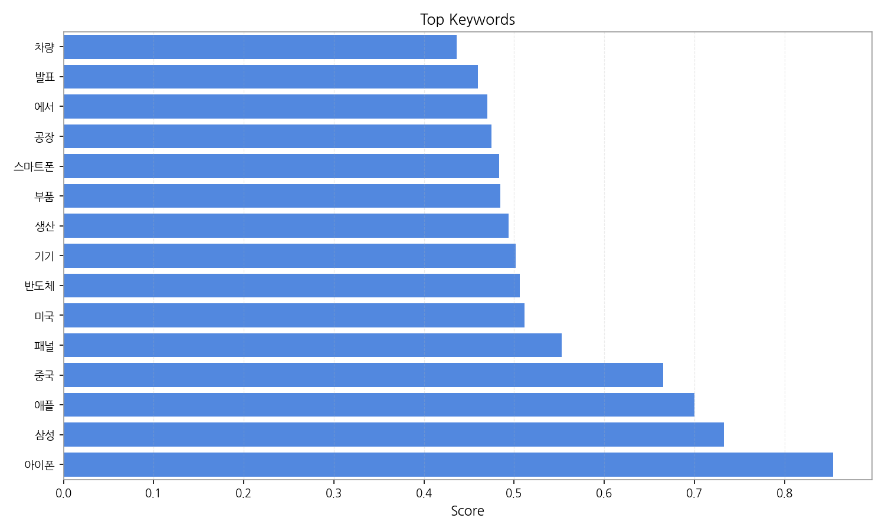
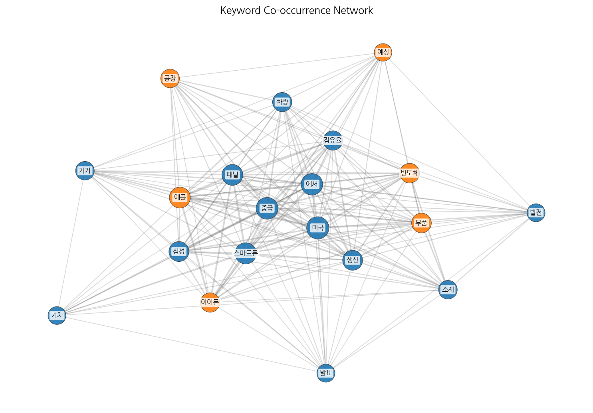
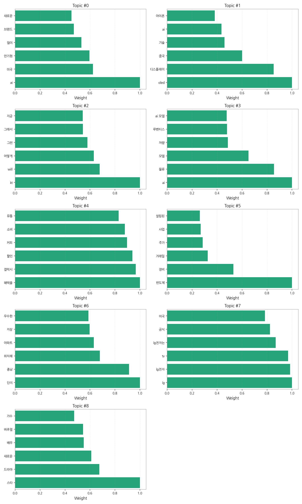
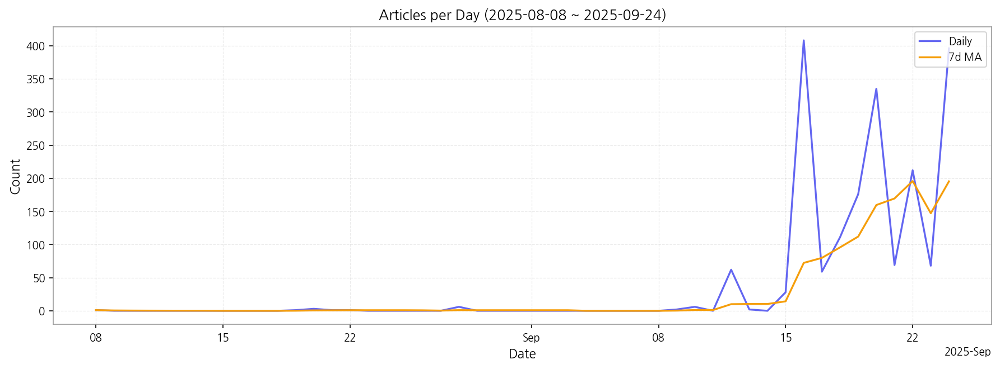

1. 핵심 맥락:
2. 최근 변화/스파이크:
3. 실무 인사이트:
| Rank | Keyword | Score |
|---|---|---|
| 1 | 아이폰 | 0.854 |
| 2 | 삼성 | 0.733 |
| 3 | 애플 | 0.700 |
| 4 | 중국 | 0.665 |
| 5 | 패널 | 0.553 |
| 6 | 미국 | 0.512 |
| 7 | 반도체 | 0.506 |
| 8 | 기기 | 0.501 |
| 9 | 생산 | 0.494 |
| 10 | 부품 | 0.485 |
| 11 | 스마트폰 | 0.484 |
| 12 | 공장 | 0.475 |
| 13 | 에서 | 0.470 |
| 14 | 발표 | 0.460 |
| 15 | 차량 | 0.436 |




1. 핵심 맥락:
2. 최근 변화/스파이크:
3. 실무 인사이트:
| Idea | Target | Value Prop | Score |
|---|---|---|---|
| AR/VR/XR용 초고해상도 마이크로 LED 디스플레이 모듈 사업 | 북미 빅테크 기업 (메타, 애플, 구글 등), AR/VR/XR 기기 제조사 | 기존 디스플레이 대비 압도적인 해상도 및 밝기, 뛰어난 색 재현율, 낮은 전력 소비, 소형화 및 경량화, 높은 내구성 | 4.50 |
| AI 기반 차량용 HUD (Head-Up Display) 개인 맞춤형 솔루션 | 글로벌 완성차 OEM (프리미엄 브랜드 중심), 자율주행 솔루션 개발 기업 | AI 기반 실시간 운전 분석 및 예측을 통해 운전자 맞춤형 정보 제공, 증강현실(AR) 기술을 활용한 직관적인 내비게이션, 운전자 졸음 감지 및 경고 기능, OTA 업데이트를 통한 지속적인 성능 개선 | 4.20 |
| IT 기기용 벤더블 OLED 패널 솔루션 | 글로벌 IT 기기 제조사 (삼성전자, LG전자, 애플 등) | 뛰어난 벤딩 성능 및 내구성, 얇고 가벼운 디자인, 자유로운 폼팩터 구현, 높은 화질 및 색 재현율, 저전력 | 4.00 |
| 차세대 디스플레이용 신소재 개발 및 공급 사업 | 디스플레이 패널 제조사 (삼성디스플레이, LG디스플레이, BOE 등), 소재 부품 기업 | 높은 발광 효율 및 수명, 뛰어난 색 순도, 낮은 구동 전압, 우수한 열 안정성, 친환경 소재 | 3.80 |
| 디스플레이 제조 공정 자동화 및 수율 개선 솔루션 사업 | 디스플레이 패널 제조사 (삼성디스플레이, LG디스플레이, BOE 등) | 공정 자동화율 향상, 수율 개선, 생산 비용 절감, 품질 향상, 실시간 공정 모니터링 및 분석, AI 기반 불량 예측 및 개선 | 3.50 |